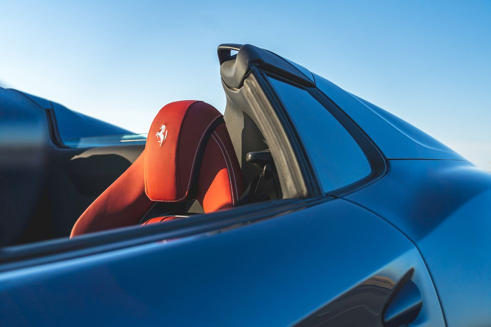

Ferrari 812 GTS: The V12 Spider Return
Besides limited-edition models like the new Daytona SP3, the only way to get a glorious V-12 engine in a Ferrari these days is to buy an 812. For 2022, the 812 comes in both GTS and new Competizione guise, both powered by a 6.5-liter V-12. The GTS makes 789 horsepower and its stowable roof lets you drink in the V-12's otherworldly shriek. But the big news for 2022 is the addition of the Competizione, which turns up the wick to create a 819-hp horsepower track monster. In the Competizione the V-12 can scream to a 9500 rpm redline, and the newest 812 variant stays planted to the road thanks to a massive rear diffuser and redesigned rear wing. It also takes the already dramatic long-hood looks of the 812 GTS to a new extreme, with numerous vents and air intakes carved into the bodywork and a carbon fiber strip cutting across the hood. The Competizione unsurprisingly makes the 812 even faster, and also comes as a convertible, called Competizione A. With every Ferrari from here on out expected to be a hybrid, the latest 812 marks the end of era.
The 812 lineup drops the Superfast but adds the extreme Competizione model. This track-oriented 812 gains 30 horsepower, lighter materials, revised aerodynamics. Ferrari will only build 500 coupes and 312 Competizione A convertibles, but they have all already been sold.
Ferrari offers the 812 GTS in a single spec that features carbon-ceramic brake rotors, 20-inch wheels, and an interior slathered in aromatic leather. Buyers can select from a host of paint colors, interior trimmings, and wheel designs, but that's about the extent of the customization. Given that the Competizione is already sold out, we'd recommend the GTS, which allows us to enjoy the feeling of windswept hair and revel in long drives down the Pacific Coast Highway or through the Catskills.
Fuel consumption and emissions
CO2 Emission:
Low: 588 g/km
Mid: 360 g/km
High: 318 g/km
Extra high: 348 g/km
Combined: 373 g/km
Fuel consumption:
Low: 25,8 l/100km
Mid: 15,8 l/100km
High: 14,0 l/100km
Extra high: 15,3 l/100km
Combined: 16,4 l/100km
NOTE: The values of fuel consumptions and CO2 emissions shown were determined according to the European Regulation (EC) 715/2007 in the version applicable at the time of type approval
The fuel consumption and CO2 emission figures refer to the NEDC cycle and to the vehicle set-up with the HELE system.
Design
The 812's cabin provides seating for two, with reasonably spacious accommodations, good ergonomics, and modern design. Wishing for drivers to embrace the grand-touring nature of the 812 and keep their hands on the wheel at all times, Ferrari eliminated the typical steering-wheel stalks and instead put push-button controls for the wipers and turn signals on the spokes. As for storage space, the coupe outshines many competitors, offering 18 cubic feet of cargo volume. We can't say the same for the convertible, though. The GTS's roof-folding equipment cuts that down to a mere seven cubes. You'll need to send most of your luggage on ahead.
Retractable hard top
The retractable hard top (RHT), which opens in just 14 seconds at speeds of up to 45 km/h, does not impinge upon the interior dimensions, thus maintaining the donor car’s roomy cockpit. The electric rear screen, which acts as a wind-stop, makes the car truly useable with the top down while, with the top up, it can be left open to allow occupants to continue to luxuriate in the naturally-aspirated V12’s unique soundtrack.
The buttresses
On the spider version of the 812 Superfast, the entire rear of the car - roof, tonneau cover and luggage compartment - has been redesigned. The idea was to lend the car a new blend of sleekness and balance, thanks to two buttresses beneath which the roof movement mechanism is stowed. The buttresses were designed to visually embody a sense of forward thrust and lend the side windows a signature look that would set the spider apart from the berlinetta. When the top is dropped, the roof panels disappear beneath the aforementioned tonneau cover.
The Flanks
The draped design of the flanks visually shortens the tail and is characterised by sharply slanted crease lines and impressively muscular wheelarches that imbue it with the power and aggression warranted by its imposing V12.
Dynamics
The aim in developing the 812 GTS was to retain the exhilarating feeling of speed and power delivered by the berlinetta version in terms of accelerating, response times and agility.
The 812 GTS is equipped with all of the 812 Superfast’s new generation components and control systems and, like it, delivers impressive handling. It sports Electric Power Steering (EPS) which, in line with Ferrari tradition, is used to fully exploit the potential of the car in terms of performance by integrating it with all of the electronic vehicle dynamics controls, including Version 5.0 of Ferrari’s patented SSC. Another of the integrated systems is the Virtual Short Wheelbase 2.0 system (PCV), which has been further evolved based on experience gained since its debut on the F12tdf..
The following high performance driver assistance features are also featured:
- Ferrari Peak Performance (FPP): when cornering, the steering wheel torque will provide the driver with an indication that the car is getting closer to its limit of grip, helping the control of that dynamic state
- Ferrari Power Oversteer (FPO) - in the case of oversteer, most frequently induced while powering out of corners, the steering wheel torque will give the driver feedback to give steering wheel inputs that are coherent with realigning the car correctly
- Optimised calibration of the car’s magnetorheological dampers mean its elastic set-up is the same as the berlinetta version’s despite the 75kg increase in weight caused by strengthening work on the chassis
Consequently, its overall performance levels are very close to those of the berlinetta, with 0-100 km/h acceleration in under 3 seconds and 0-200 km/h in just 8,3 seconds. The Ferrari F152M RHT’s maximum speed is the same as the berlinetta’s: 340 km/H